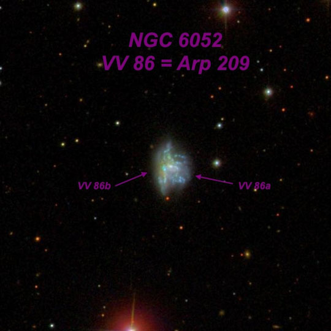

OR 7/23/14: Lassen Volcanic National Park
by Steve Gottlieb
|
On the second day at Lassen several of us (Marko, Mark, Peter, Carter, David) took a short hike to Bumpass Hell -- the largest hydrothermal area in the park.
Although I've visited this active field a number of times, its always a bit looks, feels and smells unearthly with a colorful collection of bubbling mudpots, sulfur vents, and
superhot fumaroles and the intermittent odor of sulfur (rotten eggs). Factor in the elevation of 8000 ft and a remarkably dark blue sky and it does feel a little like you're
visiting another planet.
As it wasn't windy during the daytime we looked forward to calm conditions at the Bumpass Hell parking lot during the night. But the winds started up again in the evening and we had a fairly constant light to moderate breeze. Although it didn't directly affect the observations, the wind seemed to pick up some intensity later in the night and started to sap our energy and enthusiam. So, we cut the observing short before 2:00 AM, as we still had to pack up our scopes and drive the 20-25 minutes back to Summit Lake. I focussed on some interesting galaxies this evening. A couple of these (VV 274/275 and VV 560) are from Vorontsov-Velyaminov's "Atlas of Interacting Galaxies". This Russian astronomer is known for a classification scheme he developed in the 1930s for planetary nebulae and for "Morphological Catalogue of Galaxies" (MCG), the most comprehensive galaxy catalogue to be based on the POSS1. But he very interested in galaxies which were apparently interacting, and published an Atlas (in two volumes) covering hundreds of examples discovered on the POSS1. More on V-V and his interacting galaxies can be found in my article in the September issue of Sky and Telescope, "Seeking Interacting Galaxies." Here are several of the highlights from the evening of July 23rd --- |
 VV 275 and VV 274 14 55 30 +32 50 VV 275a, the western component of this double system, appeared extremely to very faint (V = 15.9), round, 0.2' diameter. VV 275b is just 25" WSW and extremely faint and small, required averted to glimpse (V = 16.1). Looking at images afterwards, only the core was seen. VV 274, less than 1' northwest, was also extremely faint (B = 16.5), round, 0.2' diameter, quasi-stellar nucleus. The observing challenge is compounded by mag 7.2 HD 131893, which is situated just 2.4' WSW and severely hampers viewing! The best view was at 450x, with the bright star carefully placed just outside the field of view.
This very compact cluster consists of the relatively bright cD galaxy NGC 6051 (V = 13.1), with a swarm of very faint companions huddled nearby. The entire group fits within a 5' circle! Five of these faint neighbors were picked up from B = 16.2 to B = 17.3, with the two faintest ones PGC 57010 at V = 15.9 (B = 16.9) and PGC 140564 at V = 16.3 (B = 17.3). NGC 6051 was discovered in 1881 by Édouard Stephan using the 31" silvered-glass reflector at the Marseille Observatory, though he did not note any of the dim companions. It appeared fairly faint or moderately bright, elongated 4:3 N-S, 0.6'x0.45', weak concentration. A mag 11.2 star is 0.7' SSE of center and a mag 16.7 star is 0.7' W of center. Interestingly, a 1978 paper title "Redshifts for galaxies in the poor cluster AWM-4" proposes that this is actually two superimposed clusters as a couple of the galaxies have significantly higher redshifts.
This superthin galaxy is easy to locate -- just 7.5' due north of mag 4.7 Tau Corona Borealis. At 260x and 375x appeared very faint, extremely thin edge-on 11:1 NNW-SSE, ~1.1'x0.1', very low nearly even surface brightness with a very slightly brighter central region. A mag 15 star is 40" WNW of center.
Using 375x and 500x, this unusual "sickle-shaped" interacting system appeared faint, small, elongated 3:2 SW-NE, ~18"x12". An extremely faint glow was noted 27" east of center, but the SDSS reveals this is a very close pair of extremely faint stars (see image). Jimi Lowrey felt he detected the tail to the north, but I was unable to confirm.
For a change of pace, we took a break to look at some brighter eye-candy. NGC 6951 in Cepheus was bright, fairly large, slightly elongated, ~2' diameter. Sharply concentrated with a small, very bright core. A fairly broad "bar" extends east-west through the central region. Weak spiral structure is definite with careful viewing. An eastern arm appears as a subtle arc curving counterclockwise and passing west and then south of a mag 12.7 star 1.4' east of center. I expected the western arm to be more obvious, but it was quite subtle, appearing as a slightly brighter curving "edge" of the outer halo from west to north.  At 375x, moderately bright, fairly small, elongated 3:2 N-S, ~25"x18". Contains an extremely small nucleus that appears offset to the north side. The eastern component is merged, except for a small, thin extension that juts out to the south on the southeastern side. A mag 15 star lies 0.8' W. For comparison, here's how this merged pair appeared in Jimi Lowrey's 48-inch last year: At 488x, the disrupted system NGC 6052 = Arp 209 had a very strange appearance. Attached on the SE side is a faint, elongated glow, ~22"x6", extending out from the main portion of the system and giving the strong impression that an edge-on galaxy was involved in this merger. Also on the NE side, a fainter and broader extension or plume was visible oriented N-S. Although these two features seemed detached, they may be part of the same partially merged edge-on. To the west of these extended features is the most prominent region or core of the galaxy, which appeared bright, irregular round and mottled. The halo was very irregular in shape and brightness, particularly on the west side which had a mottled, tattered appearance. |